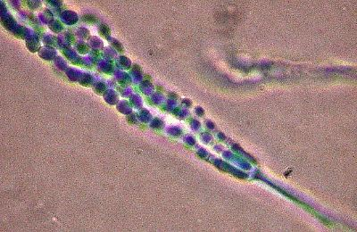

I once heard, that if your bread has mould in one end, you can’t
just scrape it—or cut it—away, like you might would do with your
cheese or tomatoes. You would have to throw the entire loaf of
bread out, even though the rest of it hasn’t touched the mould at
all. The mould is airborne and apparently—due to bread being
rather porous—the mould will travel incredibly fast through
the length of it, and by the time you notice the fuzzy, green,
and white spores in the corner of your bread, the microscopic
threads of the fungi has already weaved itself into the entire
loaf and it would now be too late to even think about eating the bread.
